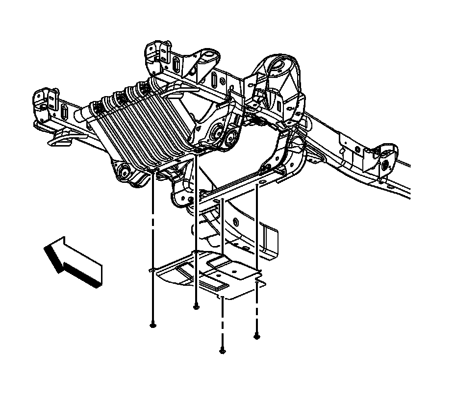
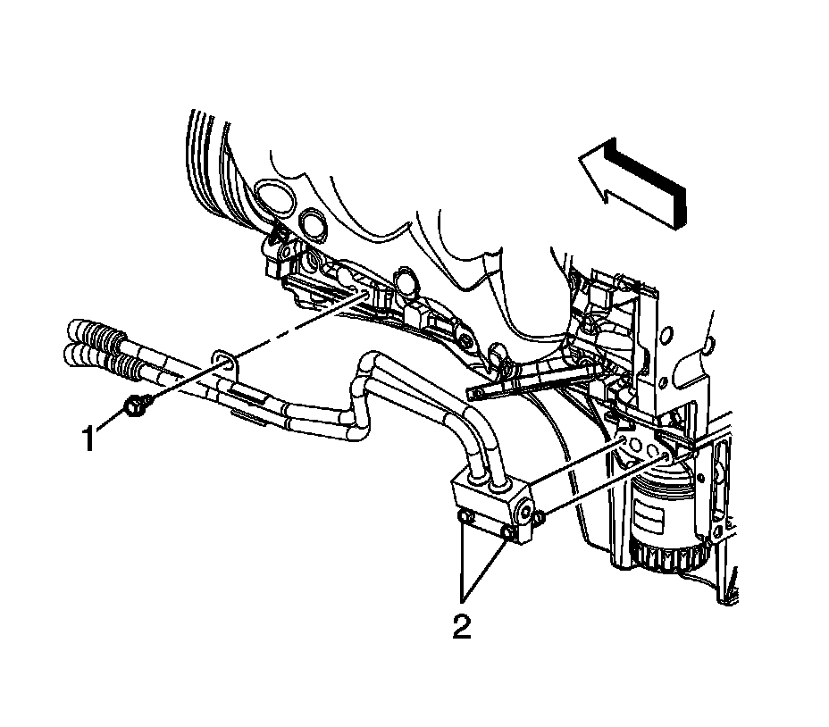
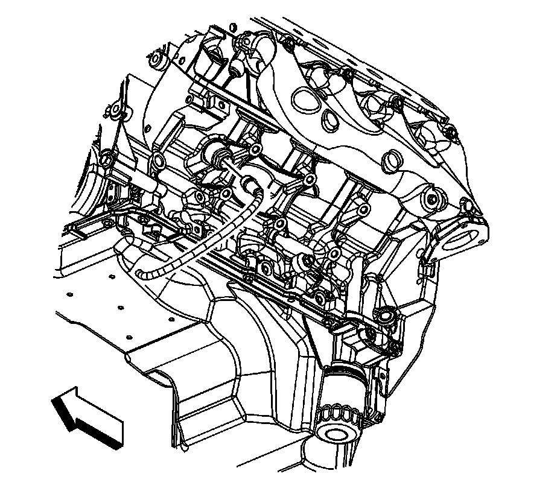
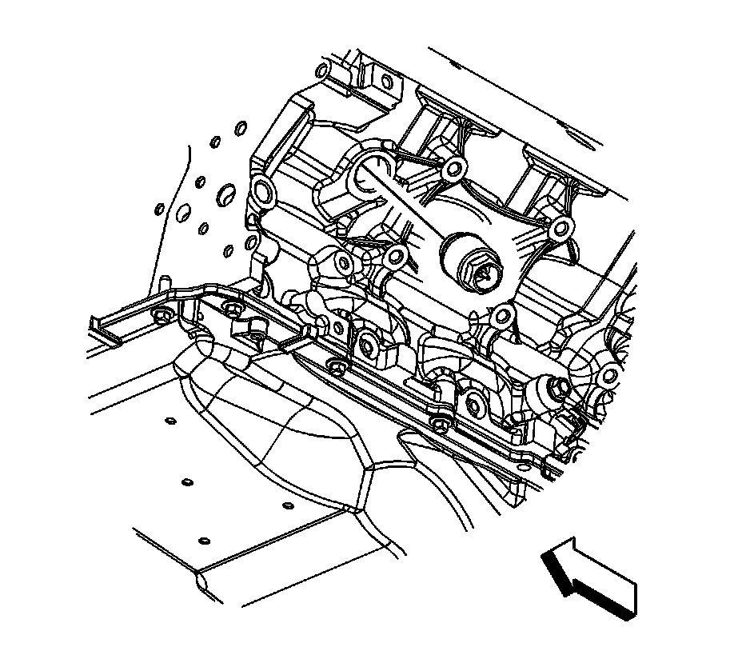

Coolant Heater Replacement (RPOs LC9/L76/L92)
Coolant Heater Replacement (RPOs LC9/L76/L92)
Removal Procedure

1. Drain the cooling system/engine block. Refer to Draining and Filling Cooling System (Vac-N-Fill).
2. Raise and support the vehicle. Refer to Lifting and Jacking the Vehicle.
3. Remove the oil pan skid plate bolts and plate, if equipped.

4. For vehicles with regular production option (RPO) L76 (6.0L), perform the following steps. Otherwise, proceed to step 9.
5. Remove the oil cooler hose bracket bolt (1), if equipped.
6. Remove the oil cooler hose adapter bolts (2), if equipped.
7. Remove and discard the oil cooler hose adapter gasket, if equipped.
8. Position the oil cooler hose adapter end out of the way, if equipped.

9. Disconnect the coolant heater cord electrical connector.

Important: Do not score the surface of the engine block hole when removing the coolant heater.
10. Remove the coolant heater from the engine block.
11. Remove any burrs, sealer, or other rough spots.
Installation Procedure
1. If reusing the old coolant heater, apply thread sealant GM P/N 12346004 (Canadian P/N 10953480), or equivalent to the threads.
Notice: Refer to Fastener Notice.
2. Install the coolant heater to the engine block.
Tighten the coolant heater to 50 N.m (37 lb ft).
3. Connect the coolant heater cord electrical connector.
4. For vehicles with RPO L76 (6.0L) perform the following steps otherwise proceed to step 9.
5. Position the oil cooler hose adapter end, if equipped.
6. Install a NEW oil cooler hose adapter gasket, if equipped.
7. Install the oil cooler hose adapter bolts (2), if equipped.
Tighten the bolts to 12 N.m (106 lb in).
8. Install the oil cooler hose bracket bolt (1), if equipped.
Tighten the bolt to 25 N.m (18 lb ft).
9. Position and install the oil pan skid plate and bolts, if equipped
Tighten the bolts to 20 N.m (15 lb ft).
10. Lower the vehicle.
11. Fill the cooling system/engine block. Refer to Draining and Filling Cooling System (Vac-N-Fill).